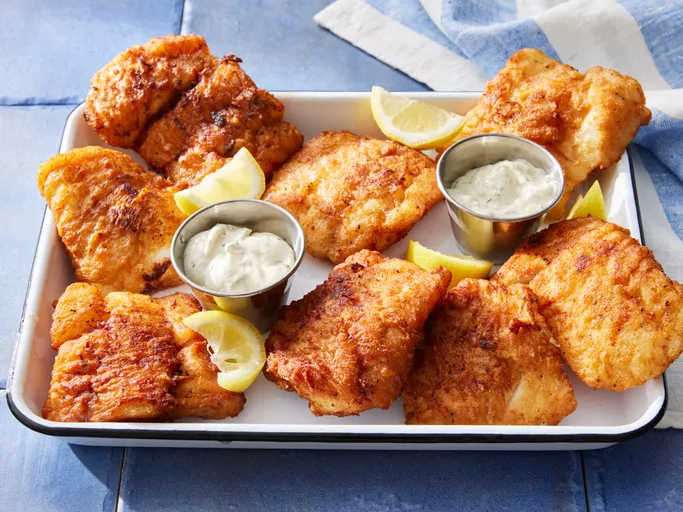

Home
Beer Batter Fish Recipe

Description
This beer-battered fish is a great recipe and very easy to make. We often fish all
day with friends, and then cook the fish afterwards out on deck. Yummy and great!
Ingredients
- 2 quarts vegetable oil for frying
- 8 (4 ounce) fillets cod
- salt and pepper to taste
- 1 cup all-purpose flour
- 2 tablespoons garlic powder or to taste
- 2 tablespoons paprika or to taste
- 2 tablespoons salt or to taste
- 2 teaspoons ground black pepper or to taste
- 1 large egg, beaten
- 1 (12 fluid ounce) can or bottle beer, or as needed
Steps
- Gather all ingredients.
- Heat oil in a deep fryer to 185 degrees C. Rinse cod fillets, pat dry, and
season with salt and pepper.
- Mix flour, garlic powder, paprika, salt and pepper in a large bowl; add egg
and stir well to combine. Gradually mix in enough beer to make a thin batter.
- Dip cod fillets into the batter to coat. Carefully lower fillets, one at a
time, into the hot oil.
- Fry several fillets at a time, turning once, until cooked through and golden
brown, about 2 minutes per side.
- Drain on paper towels. Repeat to cook remaining fillets. Serve warm.